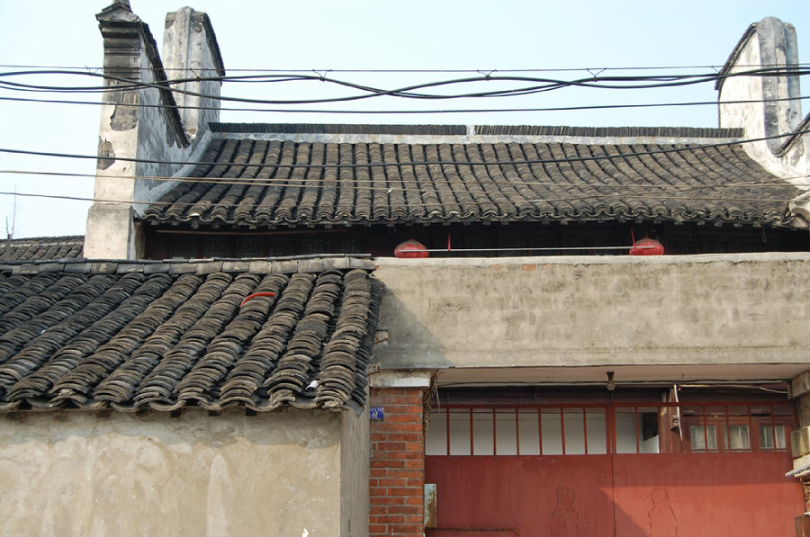

嘉兴市文物保护网 · 市级文物保护点 · 2022-05-16 · 原文

张恒昌酱园旧址位于秀洲区新塍镇西北大街156号，建于清至民国时期。原为张恒昌酱园，建国后分给无房户居住。坐北朝南，原有格局不明，现仅存一进二层楼房及前后院，占地面积184.8平方米。通面阔8.8米，前院进深4.68米，楼房进深10.36米，后院进深5.76米。院风火墙东西有观音兜。老作坊作为传统社会老百姓日常生活的一部分，是研究地方社会史、民俗史的珍贵实物资料，目前在嘉兴的存世量较少，因此该旧址具有很高的历史和科学价值。2021年被公布为嘉兴市文物保护点。